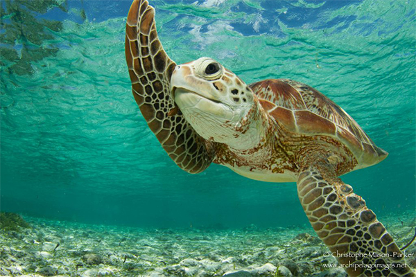
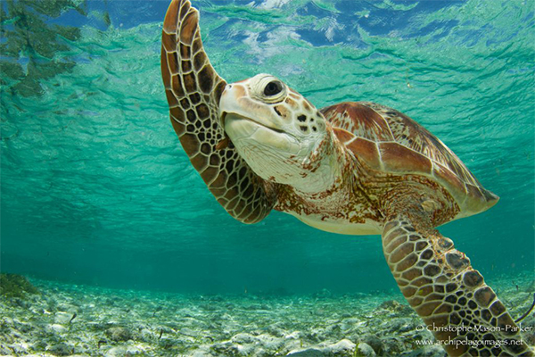

Welcome to Turtle Sanctuary
An introduction to the Sri Lankan turtle population...
An introduction to the Sri Lankan turtle population...
 

Sri Lanka is blessed with a remarkable turtle population inhabiting its coastal waters. This island nation serves as a vital nesting site for various turtle species, including the critically endangered Hawksbill turtle, the endangered Green turtle, and the vulnerable Olive Ridley turtle. These majestic creatures undertake incredible journeys, crossing vast oceans to return to Sri Lanka's shores for nesting. The conservation of Sri Lanka's turtle population is of utmost importance to preserve the country's unique biodiversity and ensure the future survival of these cherished marine reptiles.
Turtles are extraordinary reptiles that have graced our planet for millions of years. With their iconic shells and diverse sizes, turtles captivate our imagination. From tiny bog turtles to massive leatherbacks, these creatures inhabit oceans, rivers, and land.
Known for their longevity, turtles can live for decades or even over a century. Their ability to retract their heads and limbs into their shells provides them with natural defense. Female turtles display a remarkable nesting behavior, returning to their birthplace to lay eggs and perpetuate the cycle of life.
However, turtles face challenges in our modern world. Habitat loss, pollution, and illegal trade threaten their survival. Conservation efforts, like turtle sanctuaries, are crucial for their protection. Join us in raising awareness and preserving these ancient beings.
Together, we can ensure a future where turtles continue to grace our planet with their timeless presence.
It is crucial to prioritize the protection and conservation of sea turtles. These ancient creatures play a vital role in marine ecosystems, and their preservation ensures the health and balance of our oceans. Through collective efforts, we can safeguard sea turtles and secure a sustainable future for these magnificent beings.